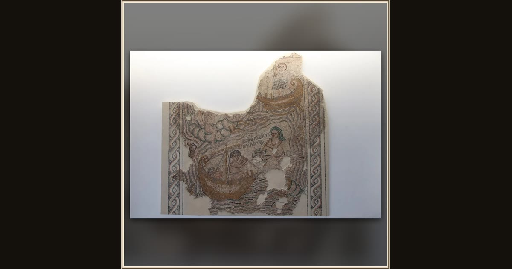

Odysseus and the Sirens (House of Leontis mosaic)
Unknown (Byzantine mosaicist) · 6th century CE · The Israel Museum, Jerusalem · Jerusalem, Israel
This 1,500-year-old mosaic floor from an ancient house in Beth Shean pictures Odysseus in his ship at sea — sailing past the Sirens whose song he had to resist. Explore its place in Book XII of the Odyssey.